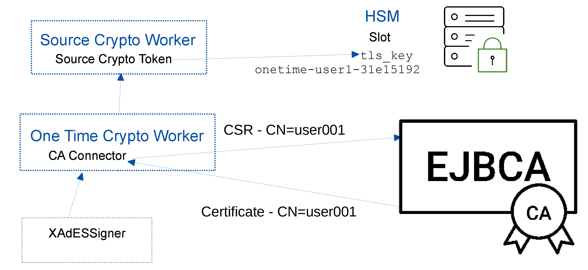

OneTimeCryptoWorker
enterprise
Fully qualified class name: org.signserver.module.onetime.cryptoworker.OneTimeCryptoWorker
Overview
This is a specific Crypto Worker used for one-time keys and certificates allowing you to have a large number of individual signing keys and certificates, despite the often limited storage capabilities of HSMs. One-time keys are created on request and are deleted once the signature has been created. For more information on setting up one-time keys using the OneTimeCryptoWorker, see Setting up One-time Keys.
The OneTimeCryptoWorker generates a new key-pair for each signing request, creates a certificate signing request (CSR), and uses a CA Connector to obtain a certificate issued for the CSR. One-time keys are not stored once the signature has been created and the key is deleted from the CryptoToken (such as the HSM) after signing.
The OneTimeCryptoWorker internally requires a PKCS11 Crypto Token referenced by the CRYPTOTOKEN property to use as the source crypto token.
When using the OneTimeCryptoWorker, enable the CESeCore keystore caching by setting cryptotoken.keystorecache=true in conf/cesecore.properties (by default disabled).
To download a sample configuration file for this worker, see Sample Worker Configurations.
The following displays an overview of the OneTimeCryptoWorker operations:

The Source Crypto Worker contains a Crypto Token in order to communicate with the HSM and perform key operations. The TLS key is created in the HSM using the Source Crypto Token.
The One Time Crypto Worker generates a new key-pair for each signing request, creates a certificate signing request (CSR), and uses a CA Connector to obtain a certificate issued for the CSR. One-time keys are not stored once the signature has been created and the key is deleted from the CryptoToken (such as the HSM) after signing.
The One Time Crypto Worker references the Source Crypto Worker to get hold of the TLS key/certificate in order to connect to EJBCA CA and also to perform one time key creation/deletion operations in HSM before/after signing respectively.
The XAdeSSigner references the One Time Crypto Worker in order to perform a signing operation. The signer is configured with a Username Authorizer to provide the user data used by the CA for certificate issuance.
Worker Properties
Common Properties
Property | Description |
|---|---|
CACONNECTOR_IMPLEMENTATION | Specifies the CA connector implementation class.
|
CRYPTOTOKEN | Specifies the name of (crypto) worker holding (for instance) the PKCS11 Crypto Token to use as the source crypto token. When using the PKCS11CryptoToken, ensure to set CACHE_PRIVATEKEY=false as each request should use a new key pair. |
KEYALG | Specifies the key algorithm to be used for key generation. Example: |
KEYSPEC | Specifies the key specification to be used for key generation. Example: |
KEYALIAS_PREFIX | Specifies the key alias prefix. Default: |
CA Connector Properties
EJBCA Peers CA Connector
The EJBCA Peers CA Connector uses EJBCA Peer Systems for issuing certificates. See Peer Systems for information on setting up a peer connection, additionally enabling the Process incoming requests option for the Peer Connector in EJBCA (EJBCA Admin Web>Peer Systems).
This EJBCA Peers CA Connector uses EJBCA Peers in a mode where SignServer acts as the RA and posts certificate signing requests to the CA over the peer connection. The CA Connector also maps the SignServer User Credentials (username) to the user data required by EJBCA to issue the certificate. The mapping can use data forwarded via JWT Bearer token using JWT Authorizer. All claim values of a token accesible via pattern <JWT.Claim_Name1> in the corresponding Subject alternative name, Subject DN and User name patterns.
Property | Description |
|---|---|
CANAME | Specifies the CA name. |
CERTIFICATEENDTIME | (Optional) Specifies the certificate end time. |
CERTIFICATESTARTTIME | (Optional) Specifies the certificate start time. |
CERTIFICATEPROFILE | Specifies the certificate profile. Required. |
CERTSIGNATUREALGORITHM | Specifies the signature algorithm used to sign the certificate signing request (CSR). |
EJBCAWSURL | Specifies the EJBCA Web Service URL. |
ENDENTITYPROFILE | Specifies the end entity profile. |
SUBJECTALTNAME_PATTERN | (Optional) Specifies the subject alternative name pattern used to derive the Subject Alternative Names attribute of the certificate to be issued. Examples: |
SUBJECTDN_PATTERN | Specifies the subject DN pattern used to derive the SUBJECT DN (Distinguished Name) of the certificate to be issued. The JWT Example: |
USERNAME_PATTERN | Specifies the user name pattern used to derive the user name for the end entity which is registered before the certificate issuance. The JWT Example: |
EJBCA WS CA Connector
The EJBCA WS CA Connector connects to EJBCA using Web Services in the same way as the RenewalWorker.
The CA Connector maps the SignServer User Credentials (username) to the user data required by EJBCA to issue the certificate.
Property | Description |
|---|---|
CANAME | Specifies CA name. |
CERTIFICATEENDTIME | (Optional) Specifies the certificate end time. |
CERTIFICATESTARTTIME | (Optional) Specifies the certificate start time. |
CERTIFICATEPROFILE | Specifies the certificate profile. |
EJBCAWSURL | Specifies the the EJBCA Web Service URL. |
ENDENTITYPROFILE | Specifies the end entity profile. |
CERTSIGNATUREALGORITHM | Specifies the signature algorithm used to sign the certificate signing request (CSR). |
SUBJECTALTNAME_PATTERN | (Optional) Specifies the subject alternative name pattern used to derive the Subject Alternative Names attribute of the certificate to be issued. Example: |
SUBJECTDN_PATTERN | Specifies the subject DN pattern used to derive the SUBJECT DN (Distinguished Name) of the certificate to be issued. The |
TLSCLIENTKEY | Specifies the TLS client key. |
TRUSTSTOREPASSWORD | Specifies the trust store password. |
TRUSTSTOREPATH | Specifies the trust store path. Either |
TRUSTSTOREVALUE | Specifies the trust store value. Either |
TRUSTSTORETYPE | Specifies the trust store type. |
USERNAME_PATTERN | Specifies the user name pattern used to derive the user name for the end entity which is registered before the certificate issuance. The |
Self-Signed CA Connector
The Self-Signed CA Connector generates its own self-signed certificate and is suitable for testing the OneTimeCryptoWorker without requiring an actual CA.
Property | Description |
|---|---|
CERTSIGNATUREALGORITHM | Specifies the signature algorithm used for self-signing the certificate and for signing the certificate signing request (CSR). |